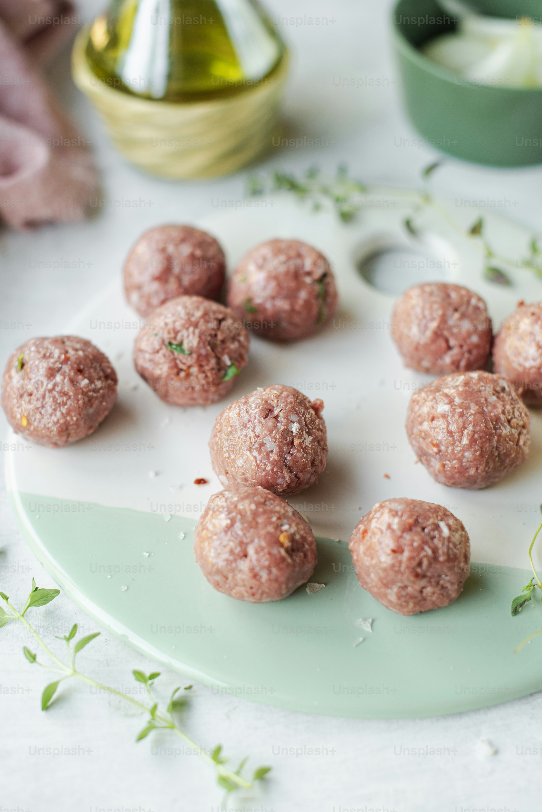

Who does not like a good dish out of a juicy chicken liver? You might even ask me: what can be better than a cooked liver? I will tell you: Liver Balls. Juicy and springy. These bad boys elevate the meaning of saying: "Play with your food" to whole another level.
Pro tip for cats only (Pesky humans should use their spoonies): Using spoons is hard. Especially if you have paws... Instead of spoon try using your mouth. Resist to eat it right now! it will be better once it's cooked.